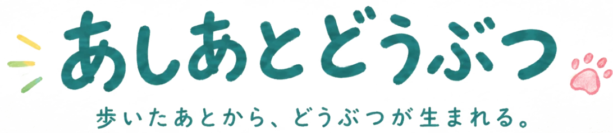

あしあとどうぶつ について
私たちは毎日、街を歩いている。
けれど、その一歩一歩にどれくらい意識を向けているだろう。
「あしあとどうぶつ」は、街を歩く時の何気ない一歩から、どうぶつが生まれるインタラクティブ作品です。
足あとや手形から生まれたどうぶつたちは、草原を歩きまわり、ほかのどうぶつと出会うと遊びはじめます。追いかけっこをしたり、かくれんぼをしたり。ときには、思いもよらない遊びが始まることも。
あなたの一歩からは、どんなどうぶつが生まれるでしょう。そして、どんな遊びが始まるのでしょう。少しだけ、覗いてみましょう。
ドラッグでなぞる形や、クリックの回数で、うまれるどうぶつが変わるよ指でなぞる形や、タップの回数で、うまれるどうぶつが変わるよ
どうぶつずかん0 / 12
なぞる形と、タップの回数などで、うまれるどうぶつが変わります。
あしあとのゆくえ
1なぞる・タップする
色々な方法で画面をなぞったり、タップしたりしてみよう。あしあとや手形が表示されます。
2かたちになる
あしあとや手形から、動物たちが生まれます。
3あそびはじめる
どうぶつをタップすると、あいさつしてくれます。また、なかまが近くにいると、いろんなあそびを始めます。